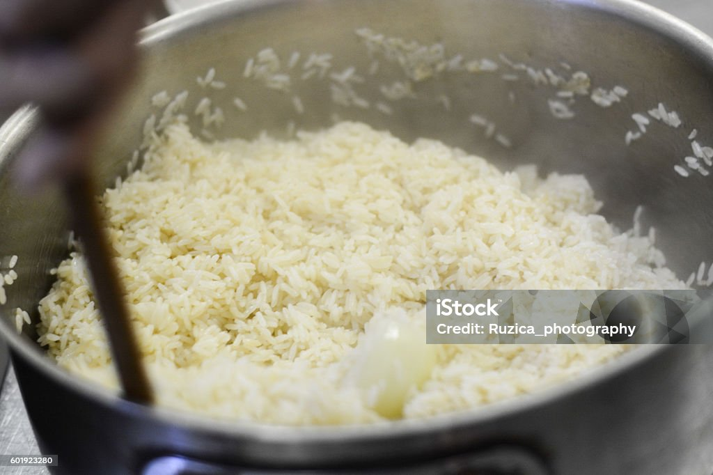

Ingrédients Utilisés dans Nos Plats

Ingrédients de Nos Plats
Pizza
.jpg)
La pizza est un plat italien populaire, généralement garni de sauce tomate, de fromage et divers ingrédients.
Préparation :
- Préparez la pâte en mélangeant farine, eau, levure et sel, puis laissez lever.
- Étalez la pâte et ajoutez la sauce tomate, le fromage et vos garnitures préférées.
- Enfournez à 220°C pendant 15-20 minutes.
Frites

Les frites sont des bâtonnets de pommes de terre frits, croustillants à l'extérieur et moelleux à l'intérieur.
Préparation :
- Pelez et coupez les pommes de terre en bâtonnets.
- Faites chauffer de l'huile dans une friteuse à 180°C.
- Faites frire les bâtonnets jusqu'à ce qu'ils soient dorés, environ 5-7 minutes.
- Égouttez sur du papier absorbant et salez au goût.
Riz
Le riz est un aliment de base dans de nombreuses cuisines, riche en glucides et facile à préparer.
Préparation :
- Rincez le riz sous l'eau froide pour enlever l'excès d'amidon.
- Faites cuire dans une casserole d'eau bouillante salée pendant 15-20 minutes jusqu'à ce qu'il soit tendre.
- Égouttez et laissez reposer quelques minutes avant de servir.